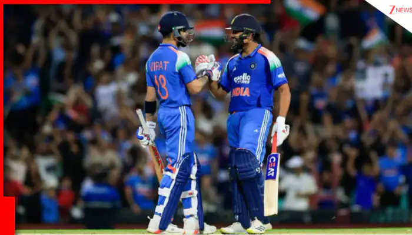

BCCI SIDELINES GAIKWAD FROM THE TEAM
India have reached New Zealand for the upcoming T20 and test matches. The Indian team is led by Rohit Sharma in the T20 format and by Jasprit Bumrah in the test format. The Indian team has a strong lineup with players like Virat Kohli, KL Rahul, Hardik Pandya, and Jasprit Bumrah. The team is looking to perform well in the upcoming series and maintain their position as one of the top teams in the world.

Gaikwad is ruled out of the NZ tour due to injury
Ruturaj Gaikwad has been ruled out of the New Zealand tour due to a finger injury. The BCCI has announced that Gaikwad will be replaced by Shubman Gill in the squad. Gaikwad has been a key player for the Indian team in recent times and his absence will be felt. However, the team management is confident that Gill will be able to step up and fill the void left by Gaikwad's injury.
| upcoming matches |
date |
| 1st T20I |
January 3, 2024 |
| 2nd T20I |
January 5, 2024 |
| 3rd T20I |
January 7, 2024 |
Probable squad
Rohit Sharma, Virat Kohli, KL Rahul, Shubman Gill, Hardik Pandya, Rishabh Pant, Jasprit Bumrah, Mohammed Shami, Bhuvneshwar Kumar, Ishan kishan , Mohammed siraj , washigton sundar , Axar Patel ,Sanju Samson , Arshadeep Singh, Ravindra Jadeja , Harshit Rana , Jitesh Sharma